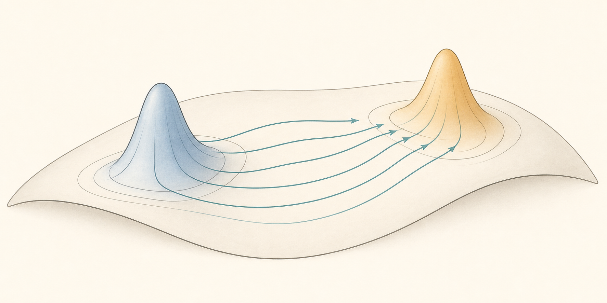

Lecture notes
Dynamical Optimal Transport: Theory, Methods and Algorithmsby Yanxiang Zhao

Forage
1 Preliminaries
2 Static OT
3 Entropic Regularization
4 Unbalanced Static OT
5 Dynamical OT
5.1 Benamou-Brenier
5.2 Straight Trajectories
5.3 Lagrangian Form
5.3.1 Continuous Normalizing Flows
5.4 Otto Calculus
5.4.1 Wasserstein Geometry: Wasserstein norm and Wasserstein Scalar Product
5.4.2 Review: Gradient Flow Dynamics
5.4.3 Wasserstein Gradient Flow Dynamics
5.5 JKO Scheme
5.5.1 JKO Flow: Implict Euler Scheme in Wasserstein Metric
5.5.2 JKO Scheme in Dynamical Form
5.5.3 JKO Scheme in Finite Dimensional Case